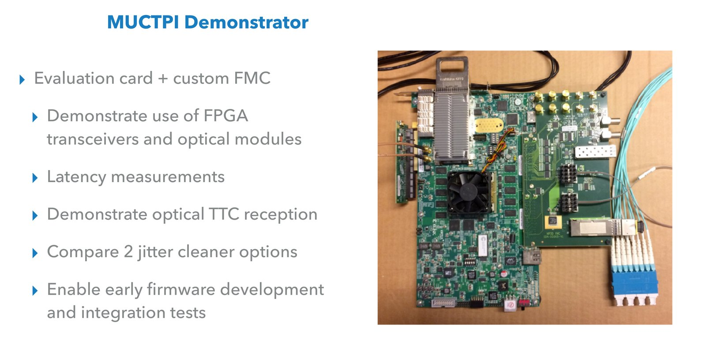
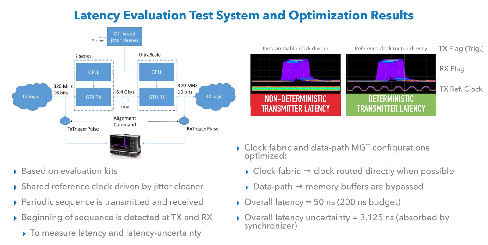
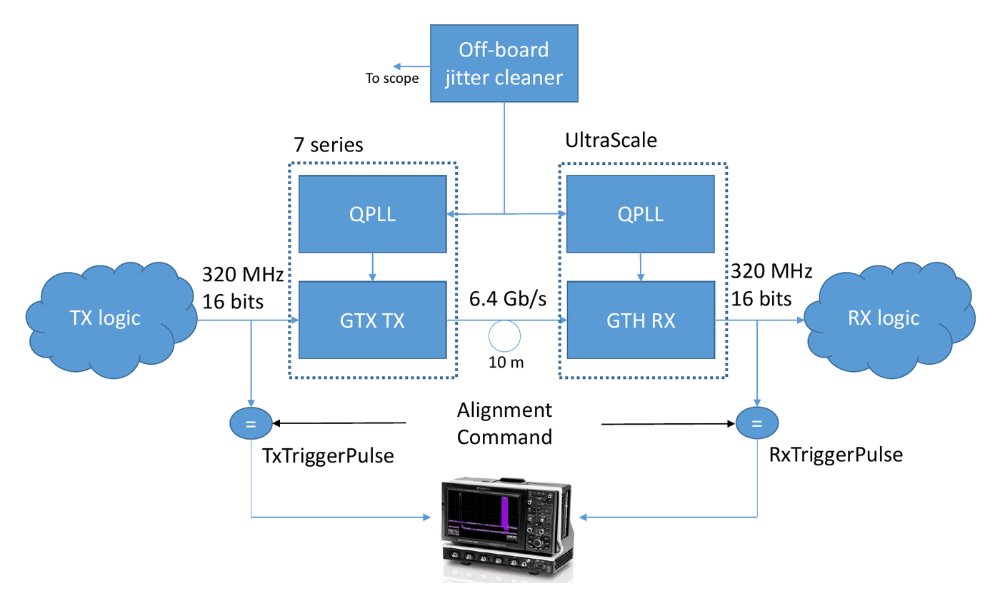
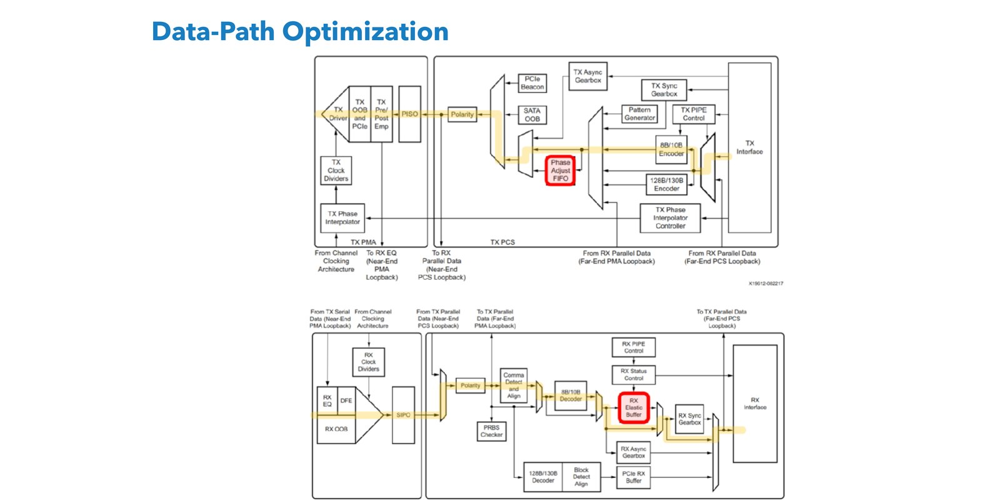
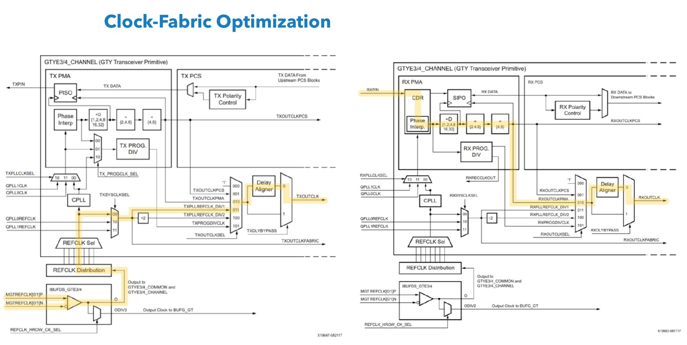

A multi-gigabit transceiver in an FPGA is a long pipeline. In its default configuration it is also a pipeline whose length changes a little every time it is reset. Most applications never notice. A first-level trigger does, because it compares data from hundreds of links that must belong to the same bunch crossing. This post is about the measurements I made to shorten that pipeline and to pin its length down, and about the part I decided to leave alone.
Why the default is not good enough
The first-level trigger of ATLAS has 2.5 µs to decide, and the muon interface I worked on (MUCTPI) has a budget of 200 ns inside that. Latency has to be low because the detector front-end can only store the data for a short time. It has to be fixed because the trigger is pipelined: each stage assumes that its inputs arrive in a known clock cycle. If one link comes up a cycle late after a reset, the trigger combines data from different bunch crossings: a wrong event can be accepted and the right one rejected.
Transceivers are designed for a wider market, where a deterministic latency is rarely required. The standard configuration puts buffers at the clock domain crossings inside the transceiver. They make the device easy to use, and they cost latency and add uncertainty.
The link
The muon sector logic sends its data to the MUCTPI at 6.4 Gb/s with 8b10b encoding. The user logic writes 16 bits on each edge of a 320 MHz clock, the encoder turns them into 20, and the serialiser sends them out. The transmitter's reference clock is derived from the LHC bunch clock, multiplied by eight in a jitter cleaner.
No clock travels with the data. The receiver recovers one from the bit stream, deserialises, finds the 20-bit word boundary by looking for the 8b10b comma symbol, decodes, and hands 16-bit words to the user logic on the recovered clock, divided down by the same ratio.
A test system that cancels its own delays
These measurements were part of a wider prototyping effort, the MUCTPI demonstrator: an FPGA evaluation card with a custom FMC mezzanine that carried optical modules and clocking. It was built to show that FPGA transceivers and parallel optical modules could do the job, to measure latency, to receive the optical timing signals of the experiment, to compare two jitter cleaner options, and to let firmware development and integration tests start long before the real board existed.

I built the measurement from two evaluation kits: a Xilinx KC705 as transmitter (GTX transceiver) and a VCU108 as receiver (GTH and GTY). Both took their reference from the same Silicon Labs Si5338 clock generator board. The transmitter sent a periodic sequence, and each side raised a pulse whenever the sequence restarted. The two pulses went to a 1 GHz oscilloscope over cables of equal length.
The time between the pulses is the transceiver-to-transceiver latency. The time needed to produce the pulse and the cable delay are the same on both sides and drop out. For the uncertainty, the scope was triggered on the transmitter pulse while the transceivers were reset every three seconds, and thousands of waveforms were accumulated. The width of the smear on the receiver pulse is the latency uncertainty.


Step one: take the buffers out
The two buffers in question are the TX phase-adjust FIFO and the RX elastic buffer. Both sit between the clock of the serialiser or deserialiser and the clock of the user interface. Bypassing both brought the data-path latency from about 67 ns down to about 50 ns.
It also halved the uncertainty. With the buffers in, the receiver pulse moved over two user-clock periods, 6.25 ns, from one reset to the next. Without them it moved over one, 3.125 ns.
The data path of a Xilinx UltraScale transceiver is drawn in the user guide as a long chain of blocks: the PCS with encoder, gearbox, phase-adjust FIFO and PRBS generator on the transmit side, and comma detection, decoder, elastic buffer and PRBS checker on the receive side, followed by the analogue PMA. Most blocks can be bypassed or configured. The highlighted path below is the one used on the trigger links, with the two buffers taken out.

The price is that the transceiver now has to align the two clock domains itself, with its delay aligner circuit, and that the user must pay attention to how the clocks are routed. That is the second step.
Step two: the transmitter clock
With the buffers bypassed, I compared two ways of producing the transmitter's user clock. In the first, it comes from a programmable divider inside the transmitter. In the second, the reference clock is routed directly to the user interface, with no divider on the way.
On the scope the two looked the same at first: 3.125 ns of spread on the receiver pulse in both cases. The difference appeared when I added the reference clock to the display. With the direct route, the reference clock stood still with respect to the transmitter pulse. With the divider, it did not. The divider comes out of reset in a state that has no fixed relation to the reference clock, so the transmitter's own latency changes from one reset to the next.
The direct route is possible when the reference clock has the same frequency as the user clock, here 320 MHz. With that choice the transmitter latency is fixed. The remaining 3.125 ns comes entirely from the receiver.

Step three: the receiver, and where I stopped
The receiver cannot use the same remedy. Its user clock has to come from the recovered clock, because the phase between the recovered clock and the local reference is unknown. On the way it passes through dividers, and those dividers start in an arbitrary phase with respect to the incoming word. The transceiver then finds the word boundary by shifting the data to fit the clock it happens to have. Each reset can therefore give a different latency, within one user-clock period.
There is a known way around this: do the word alignment outside the transceiver and shift the phase of the recovered clock, not the data, until the words line up. It requires the comma alignment to be put into a manual mode that the vendor does not support, which means modifying the vendor's transceiver IP.
I decided against it. An uncertainty of 3.125 ns is 12.5% of the 25 ns bunch-crossing period. The block that moves the data from the recovered clock to the system clock has to exist anyway, and it can be designed to absorb a variation of that size. That is what was done, and the post on link synchronisation describes how.
Results
The optimised configuration gives a transceiver-to-transceiver latency of about 50 ns, a quarter of the MUCTPI budget, with a fixed transmitter latency and a receiver uncertainty of 3.125 ns. The MUCTPI uses these settings on its trigger path. The teams building the barrel and endcap sector logic adopted the transmitter data-path and clock settings for their boards, which is where the transmitters of these links are.
So the title is half true. The transmitter became deterministic. The receiver was left with one clock period of uncertainty on purpose, and the determinism of the complete transfer is restored one block further down.
If you are doing this yourself
Three things I would carry over to any similar measurement. Measure with a set-up in which the instrument's own delays cancel, so that the number on the scope is the number you want. Put the reference clock on the scope next to the data: two configurations with the same spread turned out to be different once the clock was visible. And decide where in the system an uncertainty is cheapest to remove. Here the place was not the transceiver.